Each skill is a ladder: a fully worked example in the solid-framed box, then four YOUR TURN questions in the dashed box — same skill, new numbers, no help. Work all four before checking the gray check: line; a tracker tick needs all four right first time. After Ladder 16 there is a mixed set of twelve further questions that do not tell you which ladder they came from.
This is the longest document in the series, on purpose. Unit 8 is 11–15% of the exam, second only to Unit 3, and this chapter is most of it. Sixteen ladders, 76 questions. What you must bring with you. Chapter 13. A weak acid problem is an equilibrium problem — same ICE table, same small-\(x\) approximation, same 5% check. If Ladders 9–10 of Chapter 13 are not automatic, stop and go back; nothing here will stick otherwise. The one habit that decides this chapter. Before any calculation, ask: is it strong or weak? Strong means it comes apart completely and the arithmetic is one line. Weak means an equilibrium and an ICE table. Answering that question first prevents most of the errors this chapter can produce. Not covered here. Buffers and titration curves (CED 8.4–8.5) are Chapter 15. Do not go looking for them.Ladder 1 • Three definitions
ZUM §14.1, 14.11Three models, each broader than the last. Each is useful; none is wrong.
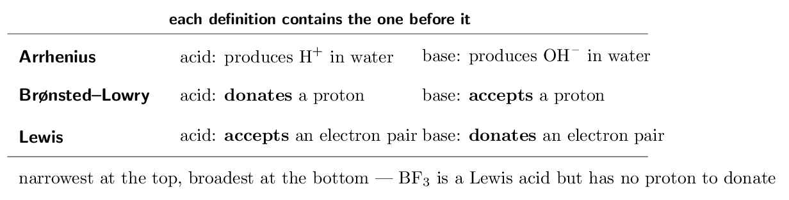
- Define a Brønsted–Lowry acid. proton donor
- Define a Lewis base. electron-pair donor
- Why can Arrhenius not classify \(\ce{NH3}\) as a base?
it contains no \(\ce{OH-}\)
- Is every Lewis acid a Brønsted acid? Give an example to
support your answer. no — \(\ce{BF3}\)
(a) proton donor (b) electron-pair donor (c) it contains no \(\ce{OH-}\) (d) no — \(\ce{BF3}\)
Ladder 2 • Conjugate acid–base pairs
ZUM §14.1Every Brønsted reaction moves one proton, and that creates two pairs. A conjugate pair differs by exactly one \(\ce{H+}\).
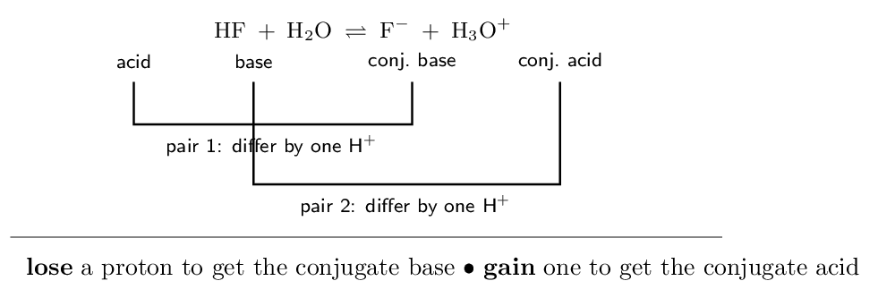
- Give the conjugate base of \(\ce{HCN}\). \(\ce{CN-}\)
- Give the conjugate acid of \(\ce{HPO4^2-}\). \(\ce{H2PO4^-}\)
- In \(\ce{HCl + H2O -> Cl- + H3O+}\), name both conjugate pairs.
\(\ce{HCl}\)/ \(\ce{Cl-}\) and \(\ce{H2O}\)/\(\ce{H3O+}\)
- Why are \(\ce{H2SO4}\) and \(\ce{SO4^2-}\) not a conjugate pair?
they differ by two protons
(a) \(\ce{CN-}\) (b) \(\ce{H2PO4^-}\) (c) \(\ce{HCl}\)/ \(\ce{Cl-}\) and \(\ce{H2O}\)/\(\ce{H3O+}\) (d) they differ by two protons
Ladder 3 • Strong versus weak
ZUM §14.2“Strong” has one meaning only: it ionises completely. It has nothing to do with concentration.
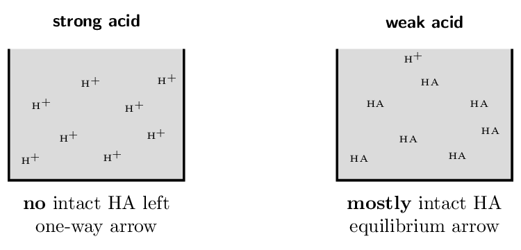
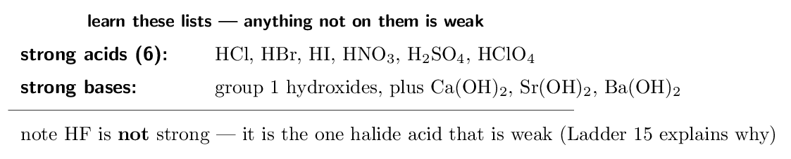
- Is \(\ce{HF}\) a strong or a weak acid? weak
- Which is more acidic: 0.10 M \(\ce{HCl}\) or
0.10 M \(\ce{HF}\)? Why? \(\ce{HCl}\) — it ionises completely
- Explain the difference between “strong” and
“concentrated”. extent of ionisation vs amount dissolved
- Which arrow, single or double, do you draw for
\(\ce{HNO3}\) in water? Why? single — \(\ce{HNO3}\) is strong
(a) weak (b) \(\ce{HCl}\) — it ionises completely (c) extent of ionisation vs amount dissolved (d) single — \(\ce{HNO3}\) is strong
Ladder 4 • Water, \(K_{w}\), and autoionisation
ZUM §14.2–14.3Water ionises slightly on its own, and that single equilibrium underlies the entire pH scale.
\[ \ce{2H2O(l) <=> H3O+(aq) + OH-(aq)} \qquad K_{w} = [\ce{H+}][\ce{OH-}] = 1.0e-14 \text{ at 25\,\mathrm{{}^\circ C}} \]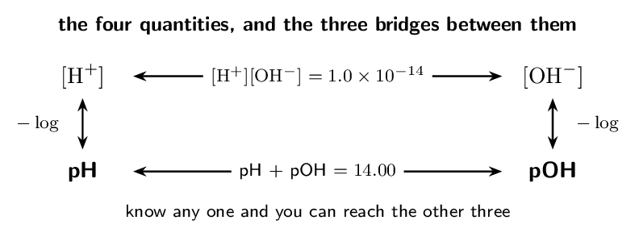
- \([\ce{H+}] = 1.0e-5\,\mathrm{M}\). Find \([\ce{OH-}]\).
- \([\ce{OH-}] = 1.0e-3\,\mathrm{M}\). Find \([\ce{H+}]\) and pH.
1.0e-11 M, pH 11.00
- Pure water at 25 °C: give \([\ce{H+}]\) and pH.
1.0e-7 M, pH 7.00
- At 50 °C neutral water has pH 6.6. Is it acidic?
Explain. no — it is neutral
(a) 1.0e-9 M (b) 1.0e-11 M, pH 11.00 (c) 1.0e-7 M, pH 7.00 (d) no — it is neutral
Ladder 5 • The pH scale
ZUM §14.3pH is a logarithm, so every whole unit is a factor of ten in \([\ce{H+}]\).
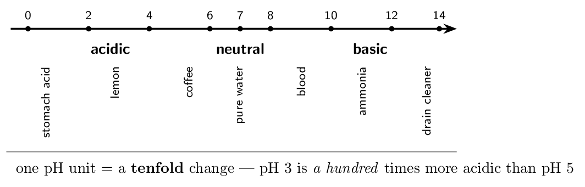
The difference is \(5 - 2 = 3\) pH units, and each unit is a factor of ten: \[ 10^{3} = \mathbf{1000 \text{ times}} \]
Verify it directly. pH 2 means \([\ce{H+}] = 1e-2\,\mathrm{M}\); pH 5 means \([\ce{H+}] = 1e-5\,\mathrm{M}\). The ratio is \(10^{-2}/10^{-5} = 10^{3}\). Same answer, and this is the version to fall back on whenever the shortcut feels slippery. The direction that catches people. Lower pH means more acidic, because of the minus sign in \(\text{pH} = -\log[\ce{H+}]\). Higher \([\ce{H+}]\) gives lower pH. If your answer has a pH 5 solution more acidic than a pH 2 one, you dropped the sign. Going backwards, from pH to concentration. \[ [\ce{H+}] = 10^{-\text{pH}} \] So pH 3.70 gives \([\ce{H+}] = 10^{-3.70} = 2.0e-4\,\mathrm{M}\) — which is exactly where Ladder 4's worked example started. The two operations are inverses, and being fluent in both directions is assumed from here on. Why the scale runs about 0 to 14. It is not a hard boundary — concentrated strong acids genuinely have negative pH. The range simply reflects that \(K_{w} = 10^{-14}\), so ordinary aqueous solutions land inside it.- How many times more acidic is pH 3 than pH 6?
- A solution has pH 4.00. Find \([\ce{H+}]\).
- A solution has pOH 3.00. Find its pH and say whether it is
acidic or basic. pH 11.00, basic
- Which is more acidic, pH 2.5 or pH 4.5? By what factor?
pH 2.5, by 100
(a) 1000 (b) 1.0e-4 M (c) pH 11.00, basic (d) pH 2.5, by 100
Ladder 6 • pH of a strong acid
ZUM §14.4The one-line calculation. Complete ionisation means \([\ce{H+}]\) equals the acid concentration, and you take a logarithm.
- Find the pH of 0.100 M \(\ce{HCl}\).
- Find the pH of 0.0010 M \(\ce{HBr}\).
- Find \([\ce{H+}]\) in a strong acid solution of pH 1.50.
- Why can you not simply write \(\text{pH} = -\log(c)\) for
1e-10 M \(\ce{HCl}\)? water's own \(\ce{H+}\) dominates
(a) 1.000 (b) 3.00 (c) 0.032 M (d) water's own \(\ce{H+}\) dominates
Ladder 7 • pH of a strong base
ZUM §14.6Same idea, one extra step — and one place where the formula unit matters.
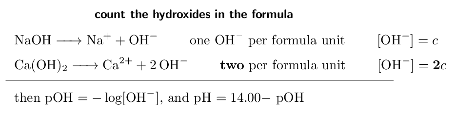
Each formula unit releases two hydroxides: \[ [\ce{OH-}] = 2 \times 0.0050 = 0.010\,\mathrm{M} \] \[ \text{pOH} = 2.00 \;\Rightarrow\; \text{pH} = \mathbf{12.00} \]
Notice that (a) and (b) give the same pH from different concentrations — 0.0050 M \(\ce{Ca(OH)2}\) and 0.010 M \(\ce{NaOH}\) are equally basic, because what matters is \([\ce{OH-}]\), not the concentration written on the bottle. Forgetting the 2 would have given pOH 2.30 and pH 11.70, an error of 0.30 pH units. Where the factor does not apply. It applies to strong bases because they dissociate completely. It does not apply to weak polyprotic acids, whose successive ionisations are separate equilibria of wildly different strengths (Ladder 13). Complete dissociation is what lets you simply multiply. One caution about \(\ce{Ca(OH)2}\) in practice: it is only sparingly soluble, so you cannot actually make a concentrated solution of it. The calculation is fine for the concentrations exam questions use.- Find the pH of 0.100 M \(\ce{KOH}\).
- Find the pH of 0.0010 M \(\ce{Ba(OH)2}\).
- Find \([\ce{OH-}]\) in a solution of pH 13.00.
- Why does \(\ce{Ca(OH)2}\) need a factor of 2 but \(\ce{NaOH}\) does
not? two \(\ce{OH-}\) per formula unit
(a) 13.000 (b) 11.30 (c) 0.10 M (d) two \(\ce{OH-}\) per formula unit
Ladder 8 • \(K_{a}\) and what “weak” measures
ZUM §14.5 \(K_{a}\) is just an equilibrium constant, applied to one particular reaction: an acid giving up its proton to water. \[ \ce{HA <=> H+ + A-} \qquad K_{a} = \frac{[\ce{H+}][\ce{A-}]}{[\ce{HA}]} \]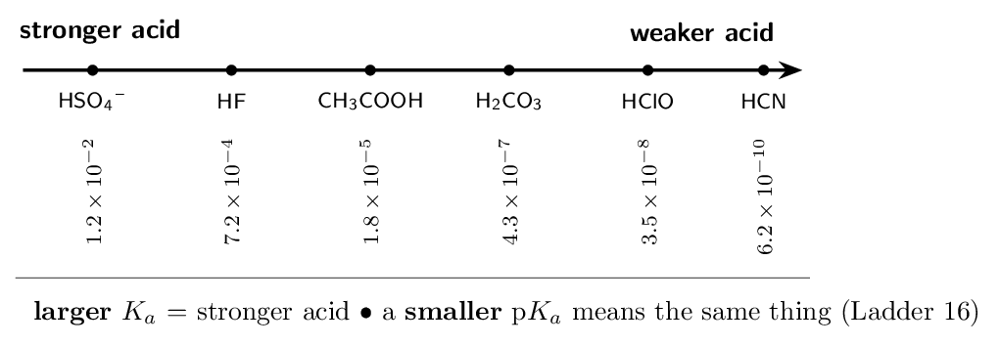
- Which is the stronger acid, \(\ce{HF}\) or \(\ce{HClO}\)?
\(\ce{HF}\)
- Write the \(K_{a}\) expression for \(\ce{HCN}\).
\([\ce{H+}][\ce{CN-}]/[\ce{HCN}]\)
- Which has the stronger conjugate base, \(\ce{HF}\) or \(\ce{HCN}\)?
\(\ce{HCN}\)
- Why are \(K_{a}\) values not tabulated for \(\ce{HCl}\)?
it is strong — \(K_{a}\) is enormous
(a) \(\ce{HF}\) (b) \([\ce{H+}][\ce{CN-}]/[\ce{HCN}]\) (c) \(\ce{HCN}\) (d) it is strong — \(K_{a}\) is enormous
Ladder 9 • pH of a weak acid
ZUM §14.5The central calculation of Unit 8. It is Chapter 13's ICE table with \(K_{a}\) in place of \(K\).
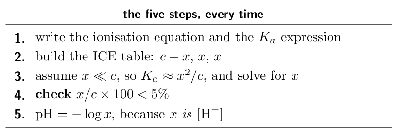
| \([\ce{CH3COOH}]\) | \([\ce{H+}]\) | \([\ce{CH3COO-}]\) | |
|---|---|---|---|
| I | 0.500 | 0 | 0 |
| C | \(-x\) | \(+x\) | \(+x\) |
| E | \(0.500-x\) | \(x\) | \(x\) |
- Find the pH of 1.00 M acetic acid
(\(K_{a} = 1.8e-5\)).
- In the ICE table for a weak acid, what does \(x\) represent
physically? \([\ce{H+}]\) at equilibrium
- Why must you check the 5% rule?
to confirm dropping \(x\) was legitimate
- A weak acid and a strong acid are both at
0.10 M. Which has the lower pH, and why?
the strong acid
(a) 2.37 (b) \([\ce{H+}]\) at equilibrium (c) to confirm dropping \(x\) was legitimate (d) the strong acid
Ladder 10 • Percent ionisation
ZUM §14.5 \[ \text{percent ionisation} = \frac{[\ce{H+}]_{\text{equilibrium}}}{[\ce{HA}]_{0}} \times 100 \]This is the same fraction as the 5% check — but here it is the answer, not a validity test.
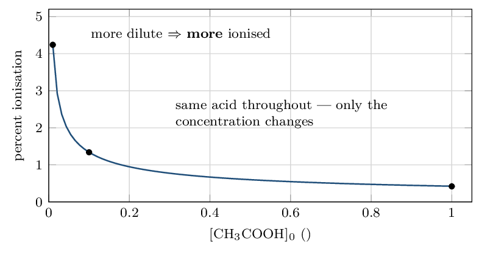
- A 0.20 M weak acid has \([\ce{H+}] =
2.0e-3\,\mathrm{M}\). Find its percent ionisation.
- Does diluting a weak acid raise or lower its percent
ionisation? raises it
- Does diluting a weak acid raise or lower its pH?
raises it (less acidic)
- Does diluting a weak acid change its \(K_{a}\)? Explain.
no — only temperature does
(a) 1.0% (b) raises it (c) raises it (less acidic) (d) no — only temperature does
Ladder 11 • Weak bases and \(K_{b}\)
ZUM §14.6Identical machinery, one substitution: the base takes a proton from water, so what you solve for is \([\ce{OH-}]\), and you must finish by converting to pH.
\[ \ce{B + H2O <=> BH+ + OH-} \qquad K_{b} = \frac{[\ce{BH+}][\ce{OH-}]}{[\ce{B}]} \]- Write the \(K_{b}\) expression for methylamine, \(\ce{CH3NH2}\).
\([\ce{CH3NH3+}][\ce{OH-}]/[\ce{CH3NH2}]\)
- For 0.100 M of a base with \(K_{b} = 1.0e-5\),
find \([\ce{OH-}]\).
- Convert that \([\ce{OH-}]\) to a pH.
- Why does a weak-base ICE table give pOH rather than pH
directly? \(x\) is \([\ce{OH-}]\)
(a) \([\ce{CH3NH3+}][\ce{OH-}]/[\ce{CH3NH2}]\) (b) 1.0e-3 M (c) 11.00 (d) \(x\) is \([\ce{OH-}]\)
Ladder 12 • \(K_{a} \times K_{b} = K_{w}\)
ZUM §14.6For a conjugate pair — and only for a conjugate pair — the two constants multiply to \(K_{w}\).
\[ K_{a} \times K_{b} = K_{w} = 1.0e-14 \qquad\text{equivalently}\qquad \text{p}K_{a} + \text{p}K_{b} = 14.00 \]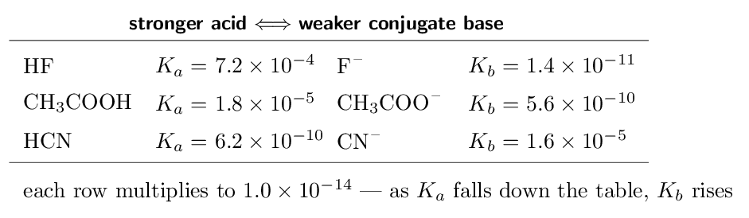
- \(\ce{HF}\) has \(K_{a} = 7.2e-4\). Find \(K_{b}\) for \(\ce{F-}\).
- A base has \(K_{b} = 1.0e-6\). Find \(K_{a}\) for its
conjugate acid.
- An acid has p\(K_{a} = 4.00\). Find p\(K_{b}\) for its conjugate
base.
- Why do \(K_{a}\) for acetic acid and \(K_{b}\) for ammonia
not multiply to \(K_{w}\)? they are not a conjugate pair
(a) 1.4e-11 (b) 1.0e-8 (c) 10.00 (d) they are not a conjugate pair
Ladder 13 • Polyprotic acids
ZUM §14.7Acids with more than one ionisable proton give them up in stages, and each stage is far weaker than the one before.
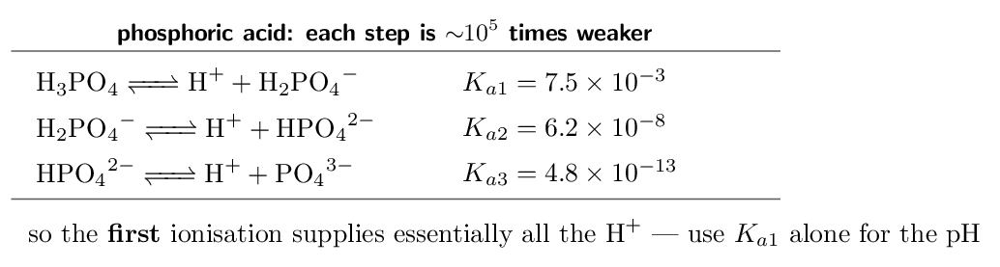
- Why is \(K_{a2}\) always smaller than \(K_{a1}\)?
removing \(\ce{H+}\) from a negative ion is harder
- Which \(K\) do you use to find the pH of 0.10 M
\(\ce{H3PO4}\)? \(K_{a1}\)
- Write the equation for the second ionisation of \(\ce{H2CO3}\).
\(\ce{HCO3^- <=> H+ + CO3^2-}\)
- Why is \(\ce{H2SO4}\) the exception among polyprotic acids?
its first ionisation is strong
(a) removing \(\ce{H+}\) from a negative ion is harder (b) \(K_{a1}\) (c) \(\ce{HCO3^- <=> H+ + CO3^2-}\) (d) its first ionisation is strong
Ladder 14 • Acid–base properties of salts
ZUM §14.8Dissolve a salt and its ions may react with water. Whether the solution comes out acidic, basic or neutral depends on which parent acid and base the salt came from.
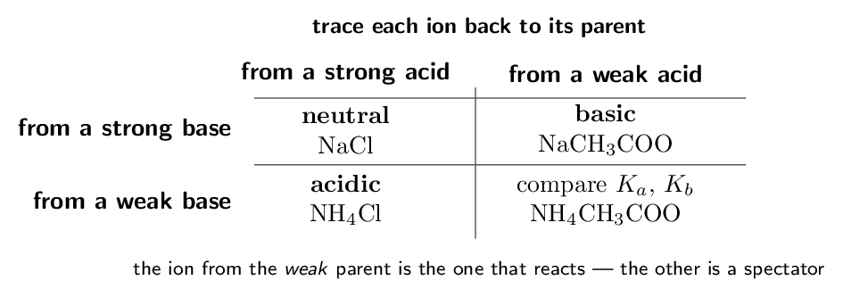
- Is a \(\ce{KNO3}\) solution acidic, basic or neutral? Explain.
neutral
- Is a \(\ce{NaCN}\) solution acidic, basic or neutral? Explain.
basic
- Is a \(\ce{NH4NO3}\) solution acidic, basic or neutral? Explain.
acidic
- Which ion in \(\ce{NaF}\) reacts with water, and what does it
produce? \(\ce{F-}\), producing \(\ce{OH-}\)
(a) neutral (b) basic (c) acidic (d) \(\ce{F-}\), producing \(\ce{OH-}\)
Ladder 15 • Structure and acid strength
ZUM §14.9–14.10Why is \(\ce{HI}\) strong and \(\ce{HF}\) weak? Why is \(\ce{HClO4}\) the strongest common acid? Two families, two different explanations.
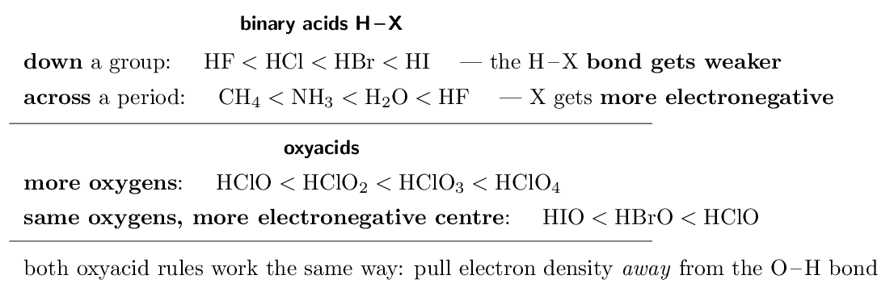
You might expect fluorine, the most electronegative element, to give the strongest acid. It does not, and the reason is bond strength. Iodine is large, so the \(\ce{H-I}\) bond is long and weak and the proton leaves easily. The \(\ce{H-F}\) bond is short and very strong, and holding onto the proton is exactly what makes \(\ce{HF}\) weak. Going down a group, bond strength beats electronegativity.
Binary acids across a period: \(\ce{CH4}\) \(<\) \(\ce{NH3}\) \(<\) \(\ce{H2O}\) \(<\) \(\ce{HF}\). Here the sizes are similar, so bond strength no longer dominates and electronegativity takes over. A more electronegative X pulls the bonding electrons toward itself, leaving the hydrogen more positive and easier to remove — and stabilising the anion left behind. Oxyacids, more oxygens: \(\ce{HClO}\) \(<\) \(\ce{HClO2}\) \(<\) \(\ce{HClO3}\) \(<\) \(\ce{HClO4}\). Each extra oxygen is highly electronegative and pulls electron density away from the \(\ce{O-H}\) bond, weakening it. It also spreads the negative charge of the anion over more atoms, which stabilises the conjugate base. Both effects push in the same direction. Oxyacids, same oxygens: \(\ce{HIO}\) \(<\) \(\ce{HBrO}\) \(<\) \(\ce{HClO}\). Same argument with the central atom instead: chlorine is the most electronegative of the three and withdraws the most. Say it in terms of the conjugate base. “The more the negative charge is delocalised, the more stable the conjugate base, so the stronger the acid.” That single sentence answers most structure questions in this ladder, and it earns marks where “it has more oxygens” does not.- Which is the stronger acid, \(\ce{HBr}\) or \(\ce{HCl}\)? Why?
\(\ce{HBr}\) — weaker bond
- Which is the stronger acid, \(\ce{HClO3}\) or \(\ce{HClO}\)? Why?
\(\ce{HClO3}\) — more oxygens
- Which is the stronger acid, \(\ce{H2O}\) or \(\ce{NH3}\)? Why?
\(\ce{H2O}\) — O is more electronegative
- Why is \(\ce{HF}\) weak when \(\ce{F}\) is the most electronegative
element? the \(\ce{H-F}\) bond is very strong
(a) \(\ce{HBr}\) — weaker bond (b) \(\ce{HClO3}\) — more oxygens (c) \(\ce{H2O}\) — O is more electronegative (d) the \(\ce{H-F}\) bond is very strong
Ladder 16 • pH and p\(K_{a}\)
ZUM §14.8p\(K_{a} = -\log K_{a}\), exactly as pH is \(-\log[\ce{H+}]\). Comparing the two tells you which form of the acid dominates.
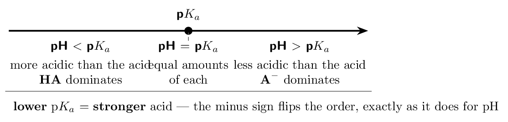
At pH 7.00, pH \(>\) p\(K_{a}\), so the deprotonated form \(\ce{CH3COO-}\) dominates. And at pH 4.74 exactly, the two are present in equal amounts.
Why this matters beyond the exam. It is how a drug's behaviour is predicted: aspirin has p\(K_{a} \approx 3.5\), so in stomach acid (pH \(\approx 2\)) it is neutral and crosses membranes easily, while in blood (pH 7.4) it is ionised and stays put. Same molecule, two environments, opposite behaviour — read off a comparison of pH with p\(K_{a}\). The rule in one line: low pH protonates, high pH deprotonates, and p\(K_{a}\) is the pH at which the balance tips.- An acid has \(K_{a} = 1.0e-3\). Find p\(K_{a}\).
- Acid A has p\(K_{a} = 3.0\) and acid B has p\(K_{a} = 6.0\). Which
is stronger? A
- An acid with p\(K_{a} = 5.0\) sits in a solution at pH 8.0. Which
form dominates? \(\ce{A-}\)
- At what pH are \([\ce{HA}]\) and \([\ce{A-}]\) equal?
pH \(=\) p\(K_{a}\)
(a) 3.00 (b) A (c) \(\ce{A-}\) (d) pH \(=\) p\(K_{a}\)
Mixed set • twelve questions, no labels
Every question so far arrived with its ladder attached, so you always knew which method to use. On the exam you will not. These twelve are deliberately unlabelled and out of order — the first decision, every time, is which kind of problem is this?
- Find the pH of 0.020 M \(\ce{HNO3}\).
- Find the pH of 0.020 M \(\ce{NaOH}\).
- Give the conjugate base of \(\ce{H2PO4^-}\) and the conjugate acid of \(\ce{HCO3^-}\).
- Is a solution of \(\ce{K2CO3}\) acidic, basic or neutral? Explain in one sentence.
- A weak acid has \(K_{a} = 4.0e-6\). Find \(K_{b}\) for its conjugate base.
- Which is the stronger acid, \(\ce{HBrO}\) or \(\ce{HBrO3}\)? Give the reason.
(a) 1.70 (b) 12.30 (c) \(\ce{HPO4^2-}\) and \(\ce{H2CO3}\) 4. basic 5. 2.5e-9 6. \(\ce{HBrO3}\)
- Find the pH of 0.250 M of a weak acid with \(K_{a} = 4.0e-5\).
- Find the percent ionisation for question 7.
- Find the pH of 0.0050 M \(\ce{Ba(OH)2}\).
- A solution has pOH 4.20. Find its pH and \([\ce{H+}]\).
- An acid has p\(K_{a} = 7.2\) and sits at pH 5.0. Which form dominates?
- Explain in one sentence why 0.10 M \(\ce{HCl}\) and 0.10 M \(\ce{CH3COOH}\) have different pH values.
(a) 2.50 (b) 1.3% (c) 12.00 (d) pH 9.80, 1.6e-10 M 1(a) \(\ce{HA}\) 1(b) one is strong, one weak
Mastery tracker
Tick a row only if all four YOUR TURN questions were right on the first attempt. Every row is assessed except the Lewis model inside Ladder 1 (see its “For the exam” note) — Brønsted–Lowry is the exam's model.
| First try? | Skill | Ladder | If not, re-read… |
|---|---|---|---|
| \(\square\) | the three definitions | 1 | the models nest |
| \(\square\) | conjugate pairs | 2 | one proton, one charge |
| \(\square\) | strong versus weak | 3 | not the same as concentrated |
| \(\square\) | \(K_{w}\) and autoionisation | 4 | pH 7 only at 25 C |
| \(\square\) | the pH scale | 5 | one unit is tenfold |
| \(\square\) | pH of a strong acid | 6 | one line, no ICE |
| \(\square\) | pH of a strong base | 7 | count the hydroxides |
| \(\square\) | \(K_{a}\) and weakness | 8 | bigger \(K_{a}\), stronger acid |
| \(\square\) | pH of a weak acid | 9 | ICE, then take the log |
| \(\square\) | percent ionisation | 10 | dilution raises it |
| \(\square\) | weak bases and \(K_{b}\) | 11 | \(x\) is \([\ce{OH-}]\) |
| \(\square\) | \(K_{a}K_{b} = K_{w}\) | 12 | conjugate pairs only |
| \(\square\) | polyprotic acids | 13 | \(K_{a1}\) dominates |
| \(\square\) | salts | 14 | the weak parent decides |
| \(\square\) | structure and strength | 15 | stabilise the conjugate base |
| \(\square\) | pH and p\(K_{a}\) | 16 | low pH protonates |
| \(\square\) | mixed set (10 of 12) | — | whichever it exposed |
16/16 and the mixed set: you have the bulk of an 11–15% unit, and Chapter 15 — buffers and titrations — will feel like a continuation rather than a new subject.
12–15: look at which ladders missed. Ladders 1–8 are definitions and one-line arithmetic; they repair fast. Ladders 9–14 are the calculation core, and a miss there is the one to fix now.
Under 12, or a weak mixed set with strong ladders: that specific pattern means you can execute each method but cannot yet choose between them — which is what the exam actually tests. The repair is not more of the same practice; it is to go back through the ladders asking only “what tells me this is a weak-acid problem rather than a strong-acid one?” Build the decision, not the arithmetic.
One thing to carry into Chapter 15. Every buffer calculation starts from a weak acid and its conjugate base — Ladders 9, 12 and 16 combined. If those three are solid, buffers are mostly bookkeeping.